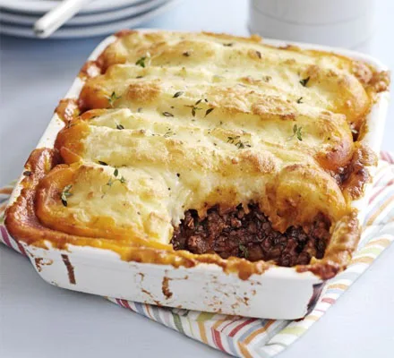

Cottage pie

Description
Make our classic meat and potato pie for a comforting dinner. This great-value family favourite freezes beautifully and is a guaranteed crowd-pleaser
Ingredients
- 3 tbsp olive oil
- 1kg beef mince
- 2 onions, finely chopped
- 3 carrots, chopped
- 3 celery sticks, chopped
- 850ml beef stock
Steps
- Heat 1tbsp olive oil in saucepan and fry mince until browned
- Heat 2 tbsp olive oil into same pad and add vegetables on a gentle heat for about 20 minutes
- Add garlic, flour and puree
- Pour over glass of wine
- ...